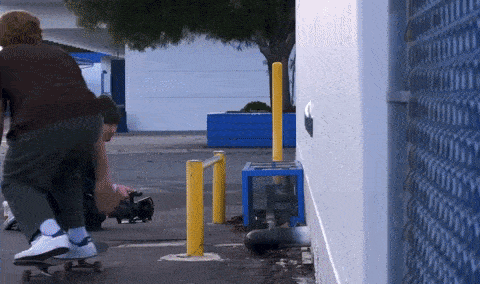
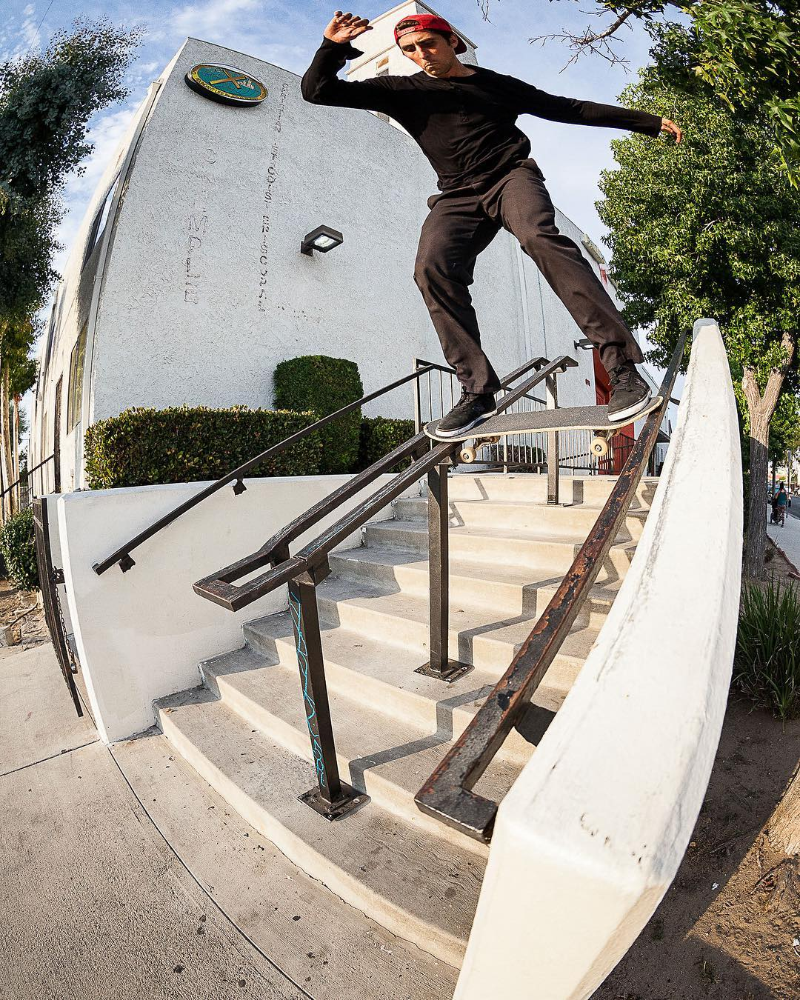
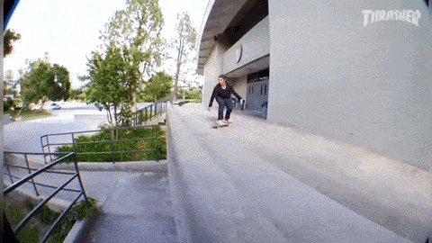
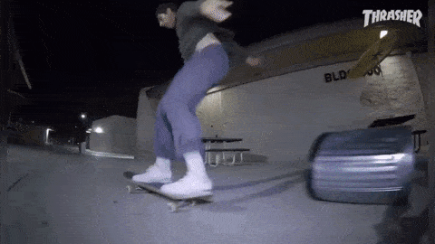
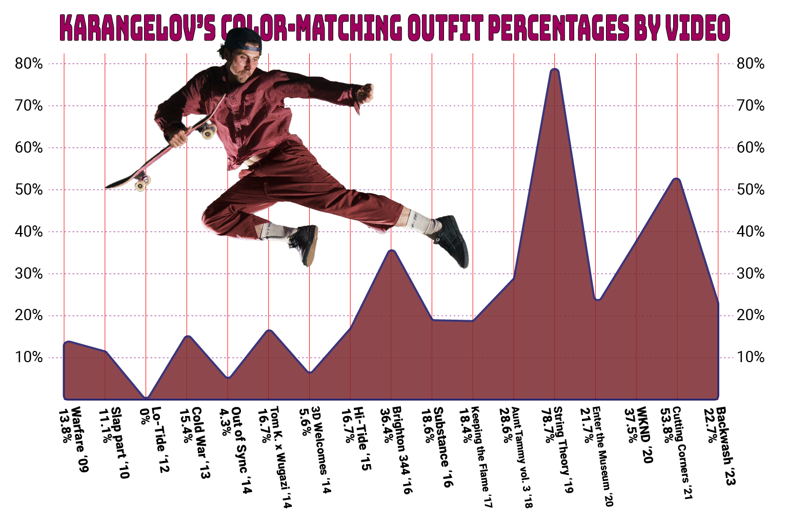
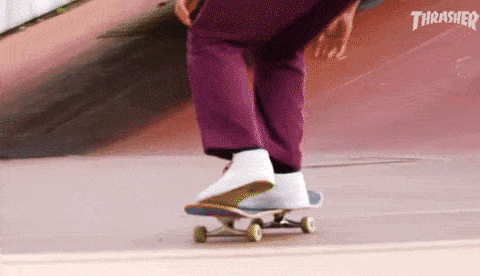
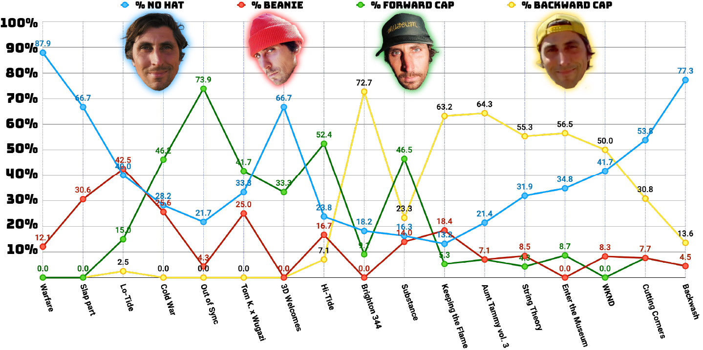
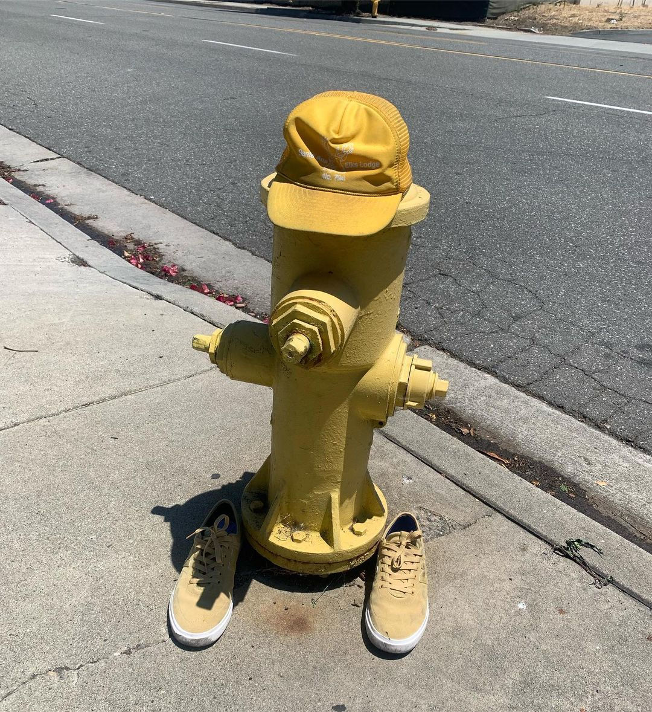
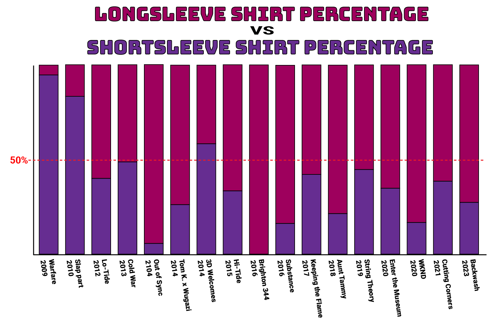
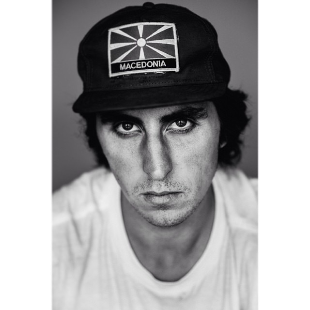

Previously on 4PLY:
In the Tom Karangelov Guide to Success: Part 1 we studied all 626 tricks in all 17 of Tom's skate parts to formulate the first 5 lessons towards your ascension to the top of skate mountain:
- Lesson 1: Deliver the Goods
- Lesson 2: Film Is Your Friend So Film With Your Friends
- Lesson 3: Lean Into Your Strengths
- Lesson 4: Be Quick On Your Feet
- Lesson 5: Unlock the Power of Combinations
We know you're anxious to continue winning, so let's jump right back into it.
Lesson 6: Explore Your Environment
If you walk away from this deep dive into the Karangelov oeuvre with just one key concept (that doesn’t pertain to outfit selection), it must be that where you skate matters. Few interviews or articles with or about Tom fail to emphasize how much time and consideration he puts into finding, preparing, and skating original spots. It can’t be overemphasized.
This article is no different.
"In Backwash I did this feeble to nosegrind on a box that I cut the hinges off. And the other day Jamie Foy was like “That box isn't real, Dog. You put that box there!” I think he was just fucking with me. But if not that makes me even more happy. It's like this spot that took me so long to find Jamie Foy thinks is fake. It makes me double hyped. That is so fucking cool that in Orange County I can find a spot that looks so good that Jamie Foy thinks it's fake. OK, it's possible. There are still gems out there. I've just gotta dig deeper and look harder."

While Tom has been known to revisit his favorite haunts from time to time, the list of "famous spots" in his video edits can be counted on one hand. A couple of clips at 3rd & Army, a trick in NY's Columbus Park, some Barcelona jammies, and that is about it for popular contemporary skate locales.
"On trips I kinda struggle because, not that everyone wants to go to famous spots, but the level of skating if you were to go to, say, MACBA… I can't contribute anything to this. I think the history of this place is cool, but if I can't contribute to it I shouldn't film on it. I'd still mess around there, but if we did a WKND trip where we just went around to famous plazas I would only have, like, one trick and the rest of the kids would have whole video parts filmed there. If I won't bring something new to a perfect plaza or a perfect handrail, I'll pass on it."
Tom’s spot selection is formed by references to skateboarding history, feature film locations, digging in the cuts, and even revisiting old spots through a different lens.
"I tell myself all the time as I drive around and look for spots; “I've been in this school before and I've been behind this business. But it's been like 10 years. I skate different now. Maybe I'll find something different.” I swear the amount of times that happens is crazy. I'll be in the same place but I'll see something different. I see it how the new Tom would skate it. I can look in the same areas I did 10 years ago and I'll find something different."
Let’s take a look at the Tom K Obstacle breakdown. Mouse over any slice to get the the obstacle counts by video.
Once we accept that the major skate disciplines of transition, bowl, and manual pad tech are off the table, we still are left with a reasonably diverse set of skills on display. You've got a fair share of handrail buckness, a plethora of ledges and hubbas, plus plenty of gaps getting filled. A discerning eye will notice decent quantities of obstacles that other skaters tend to have lumped into an “Other” column: Walls, Poles, Curbs, and Tom’s old friend the Bump to Bar all put up decent numbers.
And for the handful of skate-stat afficianados out there, how about a look-see into Tom’s preferred obstacles as a function of time:
"So back then I was looking for different things. And as I get older and skating changes and I see skating different. I think I've always looked for spots and when I find the spot it tells me the trick. It changes with time."
Let’s drill down into these Obstacle numbers a bit:
Tom did tricks into banks at least 29 times and also did tricks off bumps and/or kickers 27 times (not including Bump to Bars).
His largest rail was 18 stairs, which he hit once, and his average stair count on handrail tricks was about 9 stairs, although this is hard to factor because he collected several stair-flat-stair kinkers and gap-to-rail bangers and frankly we don't have the computing power to calculate the equivalent stair count measure for those.

Looking at the Ledge details, we can reveal that Tom likes the banked ledges with 22 instances.
But he also skated 25 outledges, 23 gap to ledges, and 12 ledge to gaps.
"There's this school called La Cañada where Reynolds does the noseslide bigspin on the outledge and the big red handrail that Mike Carroll back smiths. Right across the courtyard from that is this little wall you could ollie over and then there's an outledge. And I, for fun, try to skate it and do a different trick on it for the last 4 or 5 parts. I felt, like, when I was a kid I would go to La Cañada and people would be destroying the stairs and I would always wonder “Why does no one skate this other side? It looks so cool.”"
"When I go to La Cañada I think of Johnny Layton or Mike Carroll skating the rail or Andrew Reynolds or Bradon Westgate skating the big outledge and the stairs, and it's kinda sick that some kid might look over there at 'the Tom K area'. Maybe that's how I have my little piece of skate history at that school. My mindset is a bit “This thing is cool, no one skates it, it feels like it's right under everyone's nose...”. Almost like finding buried treasure and I'm the skating it."

Lesson 7: Remove All Obstructions
It may come as a surprise to learn that for all of Tom’s reputation as a spot liberator, his video parts only features one clip of him removing skate stoppers and one clip of him using a grinder on a handrail.
But don’t be fooled; Tom’s standing as a spot emancipator is well earned with plenty of social content to back it up. Some tips from the expert in knob eradication:
"No matter the knob, use two hammers. Use the part that removes nails to get under the knob and try to wiggle it loose without breaking it. You go where the pins are and you use the nail remover side under there like a chisel, and then you can hit that hammer head with your other hammer. And once your under there you can kinda just wiggle them loose. Blowing out the ledge is pretty rare. And usually when I take them off I'll put them back in the holes so it still looks knobbed. And then you can pop them out when it's time to skate."

Be like Tom: Free the spots.
And don’t get caught.
"I scope it out. It almost has a bank robbery feel to it. If I have a weird feeling about it I won't do it. But if I can control the situation then I'll do it. If I've checked this school or business a couple times and it's good to go. It's always planned if it's anything significant. Sometimes I'll work with a partner and we'll take turns cutting and watching. It can feel like a heist. It's the lengths you have to go to skate new stuff in LA."
And if you can't obliterate 'em, then maybe you should skate 'em.

- Tricks on garbage cans: 2
- Tricks over garbage cans: 4
- Tricks through garbage cans: 1
- Tricks on dumpsters: 5
- Tricks over dumpsters: 1
- Tricks on bike racks: 3
- Tricks over bike racks: 1
- Tricks over bikes: 1
- Tricks on handicap lift components: 3
- Other things Tom skates on or over:
Shopping carts
Sculptures
Picnic tables
Cars
Skatestoppers
AC units
Trees
Logs
Stumps
Newspaper dispensers
Fire hydrants
Fences
...and so on
Lesson 8: Dress For Success
Sure, creative trick combinations, quick feet, and an eye for virgin turf is well and good, but we all know that every sponsor's crazy 'bout a sharp dressed man.
"This is real where people were thinking I was matching outfits to the spot on purpose. Dude, I swear I don't. Grant, to this day, does not believe me. I think that people might look for things that will make me match. I had a moment where I was wearing, for some reason, monochromatic outfits. I was on a crazy Talking Heads tip and seeing a lot of David Byrne stuff and it was around Halloween as well and Michael Myers is in all blue in that. So I got on a crazy monochromatic tip and one day I was wearing all brown and Grant is like, “Dude, you're wearing all brown cause the rail is brown.” I swear that's not why. I just felt comfortable. I was coordinating my outfit, just not to the spot. It was just what was in my brain at that moment… and what clothing wasn't dirty."
"We were in Miami recently and at the AirBnB getting ready. Tom puts on turquoise shoes and pants that are a slightly different tone of turquoise. He then said fuck it and puts a red shirt on and orange hat. We end up at a spot and it’s at a fruit shipping warehouse and the loading dock happens to be turquoise with a slightly differently toned turquoise forklift backed up to it. Of course the fruit trucks have orange and red fruit photos. Tom claimed he had never seen this spot before. Hard to call."
-Grant Yansura, WKND boss and filmer
Whether by coincidence or design, Tom sported a matching pants and shirt combo (matching clothing, not neccessarily matching the spot) no less that 115 times. That’s a 22.9% overall color-coordinated clip rate. And while some early career color-matching fits (typically black-on-black) no doubt occured organically, it's clear that Tom's proclivity to harmonize hues really gained momentum around 2016, peaking with a 78.7% match rate in String Theory.

"Here's another crazy one: For String Theory we went to Scotland and we went to this bank-to-metal thing and I did a front 180 nosegrind 180. And the whole spot is purple and I was wearing purple. On that one I was just like, “Fuck me”."

Lesson 9: Put A Lid On It
(and cover your arms)
If you find yourself not reaching your full skate potential, consider doing as Tom does and put a hat on your head. Here are the official Karangelov Hat Stats:

Be it beanie or baseball hat worn backwards or forwards, Tom has put a lid on it 60% of the time, with his favorite style being the classic mesh-backed trucker.
"The trucker hats also go back to Templeton. He is just a big inspiration to me in lots of ways. I think it's important for skaters to talk about the past and what inspires them. So then if some kid reads this they can go and search it. Maybe I can expose some kid to Ed Templeton footage. When I was a little kid it was like “trucker hats” and I wore them the whole time. I didn't go to dad hat or five panel or anything. I stuck through the trucker hat when the fad died and then it came back again. That's how I know I'm old."
But what’s this? Is the correlation of Tom unleashing locks coinciding with his rising maturity?
Trendlines point to “yes”. Could it be because his favorite yellow trucker hat is no longer with us?
"That yellow hat was a trucker hat that says Santa Ana Elks Lodge. I grew up in the city of Santa Ana so I repped that hat pretty hard. But it is fully dead and gone."

Now if you really want to dress for success the Karangelov way, you’ll also want to stock up on long sleeve shirts. Any will do, but particularly collared button-ups. Even if you live in Southern California.
"For some reason I've always liked long sleeve button-ups. I'm not really sure why. I guess I feel there is maybe, like, extra protection. I don't even know."

But don’t ever wear a hoody.
"I don't wear hoodies because when I was a kid the first time I bought a hoodie it was way too small and it wrapped around my waist and it made my butt look big. I was like, "Damn, dude, I have a big ass!" and this hoodie was just wrapped around my ass all weird. So I just never wore hoodies. But now me and Matt do this thing called Museum and our friend Avery wanted a hoodie for when his part came out. So we made him a hoodie and I figured I'd go back and try it. So I actually put on a normal hoodie and realized that it fits fine. This whole time I was traumatized by this small hoodie in high school."
Lesson 10: Have A Good Time
All The Time
Flip the script on SLAP. Blow up a handrail. Scour the sewers for Bobby Puleo’s missing wheel. Put a tracking device on a famous obstacle. Film doubles lines with a rollerblader. Play dress-up. Draw your own graphic. Recreate famous album covers. Stack up old televisions.
The bottom line is that if you want to succeed like Tom, you need to get out there and do stuff with your friends. Whatever your doing, even if it isn't skating, get into it and have fun. And then, like Tom, you might inspire others to go out and do stuff.
"One time my friend who was a little older was hanging out with Lance Mountain. And it wasn't told to me directly but I think about it a lot. Lance said, "The only job of a pro skater is to inspire people to have fun." That's really cool. Cause it just covers every pro skater. For some kids it would be Jamie crooking a gnarly rail, but for others it is seeing Gino push, you know. Whatever inspires people to have fun. As long as you're inspiring people to have fun you're doing your job. At one point I thought my job was to maybe just film really good tricks that are hard. Cause the videos I grew up on, people were pushing themselves to skate the hardest stuff they can. But now I can relate so much more to what Lance told my friend. Sometimes I can be really harsh on myself and my skating and then I kinda think that maybe someone would think this is fun."

After studying and counting and analyzing and talking with Tom we can conclude the real takeaway of his success, and why we want Tom to succeed, is that he is enthusiastic about what he does.
Tom cares. And we, in turn, care about Tom.
Make sure to watch Tom K win it all in his new part in WKND's Rumble Pack video, coming later in July (or whenever the music rights clear so who knows). Huge thanks to Tom, Grant from WKND, and all the 4PLY family for helping bring these articles together.
Make sure to follow Tom on Instagram, tag him with any and all photos of bent poles in your neighborhood, plus support all his sponsors so they know that they chose wisely. Might as well follow 4PLY while you’re at it.